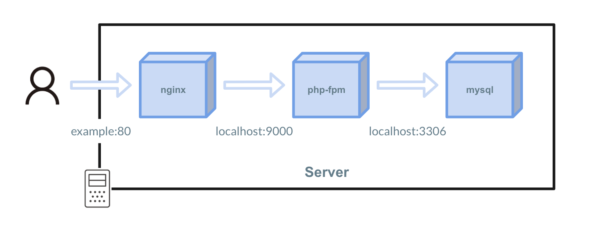
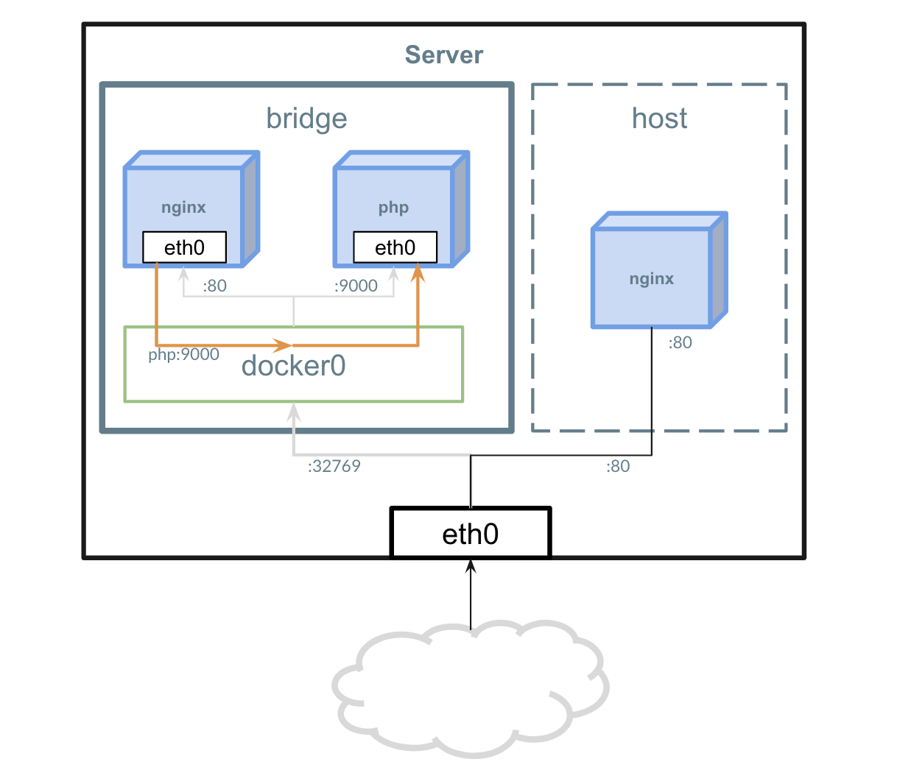

network
Networkを使用する¶

Dockerではネットワークの扱いが重要になってきます。
先述したDocker Container の動きの通り 1コンテナでは1プロセスを動かす 設計をされおり、復数プロセスを協調して動かすときにはネットワークを使用します。
NetworkはKubernetesやECS、docker-composeのような各種オーケストレーションツールを使用する際に意識する必要があります。
Driverの種類¶

Dockerは2種類のNetwork Driverが存在します。
1. bridge¶
Dockerを使用する際は基本的にこのNetwork Driverを使用します。
また、何も指定せずDocker Container を起動すると docker0 という名前のbridgeネットワークに所属します。
2. host¶
ホストマシンのeth0を直接使用する方法です。
3. none¶
どのDriverも使用せず、起動したコンテナをネットワークにも所属させないための設定です。
ネットワークを試す¶
1. デフォルトで存在するネットワークの確認¶
現在Dockerが管理しているNetwork一覧を出力します。
$ docker network ls NETWORK ID NAME DRIVER SCOPE 5d465d8f421e bridge bridge local 8ca0ba4f70cb host host local f4c209eabaad none null local
ホスト側のネットワークも確認してみましょう。
docker0 というネットワークの存在を確認できます。
$ ip a
1: lo: <LOOPBACK,UP,LOWER_UP> mtu 65536 qdisc noqueue state UNKNOWN qlen 1
link/loopback 00:00:00:00:00:00 brd 00:00:00:00:00:00
inet 127.0.0.1/8 scope host lo
valid_lft forever preferred_lft forever
2: docker0: <NO-CARRIER,BROADCAST,MULTICAST,UP> mtu 1500 qdisc noqueue state DOWN
link/ether 02:42:bb:3c:72:1d brd ff:ff:ff:ff:ff:ff
inet 172.17.0.1/16 brd 172.17.255.255 scope global docker0
valid_lft forever preferred_lft forever
14170: eth1@if14171: <BROADCAST,MULTICAST,UP,LOWER_UP,M-DOWN> mtu 1500 qdisc noqueue state UP
link/ether 02:42:ac:12:00:03 brd ff:ff:ff:ff:ff:ff
inet 172.18.0.3/16 scope global eth1
valid_lft forever preferred_lft forever
14172: eth0@if14173: <BROADCAST,MULTICAST,UP,LOWER_UP,M-DOWN> mtu 1500 qdisc noqueue state UP
link/ether ee:7a:0c:ea:1e:70 brd ff:ff:ff:ff:ff:ff
inet 192.168.0.28/23 scope global eth0
valid_lft forever preferred_lft forever
2. 新しいネットワークの作成¶
次は新しいBridgeネットワークを作成してみます。
$ docker network create myapp 5d170daf5b6e90fadf9ba0fc647cbf52dc8a442e79e258f9c8c617b3aeef4778
networkに myapp が増えていることを確認します。
$ docker network ls
NETWORK ID NAME DRIVER SCOPE
5d465d8f421e bridge bridge local
8ca0ba4f70cb host host local
+5d170daf5b6e myapp bridge local
f4c209eabaad none null local
ホスト側のネットワークにも追加されていることを確認します。
$ ip a
1: lo: <LOOPBACK,UP,LOWER_UP> mtu 65536 qdisc noqueue state UNKNOWN qlen 1
link/loopback 00:00:00:00:00:00 brd 00:00:00:00:00:00
inet 127.0.0.1/8 scope host lo
valid_lft forever preferred_lft forever
2: docker0: <NO-CARRIER,BROADCAST,MULTICAST,UP> mtu 1500 qdisc noqueue state DOWN
link/ether 02:42:bb:3c:72:1d brd ff:ff:ff:ff:ff:ff
inet 172.17.0.1/16 brd 172.17.255.255 scope global docker0
valid_lft forever preferred_lft forever
+3: br-5d170daf5b6e: <NO-CARRIER,BROADCAST,MULTICAST,UP> mtu 1500 qdisc noqueue state DOWN
+ link/ether 02:42:d7:12:d9:88 brd ff:ff:ff:ff:ff:ff
+ inet 172.19.0.1/16 brd 172.19.255.255 scope global br-5d170daf5b6e
+ valid_lft forever preferred_lft forever
14170: eth1@if14171: <BROADCAST,MULTICAST,UP,LOWER_UP,M-DOWN> mtu 1500 qdisc noqueue state UP
link/ether 02:42:ac:12:00:03 brd ff:ff:ff:ff:ff:ff
inet 172.18.0.3/16 scope global eth1
valid_lft forever preferred_lft forever
14172: eth0@if14173: <BROADCAST,MULTICAST,UP,LOWER_UP,M-DOWN> mtu 1500 qdisc noqueue state UP
link/ether ee:7a:0c:ea:1e:70 brd ff:ff:ff:ff:ff:ff
inet 192.168.0.28/23 scope global eth0
valid_lft forever preferred_lft forever
3. 作成したNetworkへnginxを参加させる¶
通信を受けるためのサーバーとしてnginxを構築します。
$ docker run --name nginx --network=myapp -d nginx
3. AmazonLinux2を起動し、Nginxコンテナへ接続する¶
Bridgeネットワークの場合、同一ネットワークのコンテナにはコンテナ名で名前解決が可能です。
Nginxと疎通できるか myapp ネットワーク内にAmazonLinux2 イメージでコンテナを起動し、 curl を実行してみましょう。
$ docker run --network=myapp -it amazonlinux:2 curl nginx:80
<!DOCTYPE html>
<html>
<head>
<title>Welcome to nginx!</title>
<style>
body {
width: 35em;
margin: 0 auto;
font-family: Tahoma, Verdana, Arial, sans-serif;
}
</style>
</head>
<body>
<h1>Welcome to nginx!</h1>
<p>If you see this page, the nginx web server is successfully installed and
working. Further configuration is required.</p>
<p>For online documentation and support please refer to
<a href="http://nginx.org/">nginx.org</a>.<br/>
Commercial support is available at
<a href="http://nginx.com/">nginx.com</a>.</p>
<p><em>Thank you for using nginx.</em></p>
</body>
</html>
$
4. 新しくネットワークを作成し、疎通できないことを確認する¶
myapp2 というネットワークを作成し、 nginx2 という命名でnginxを起動する。
$ docker network create myapp2 $ docker run --name nginx2 --network=myapp2 -d nginx
myapp ネットワークに所属しているAmazonLinux2からcurlを実行し、疎通できないことを確認する。
$ docker run --network=myapp -it amazonlinux:2 curl nginx2:80 curl: (6) Could not resolve host: nginx2
まとめ¶
- 1プロセス1コンテナ、復数プロセスはネットワークを通して通信を行う。
- Bridgeを基本的に使用する。